Arranque dual en una misma máquina virtual: primero Windows 11 Pro y después Linux Mint XFCE, de forma que al encender la máquina el gestor GRUB permita elegir cuál arrancar.
Autor: Juanma Rosado Trujillo
Hipervisor: VirtualBox (tipo 2)
Sistemas: Windows 11 Pro 24H2 y Linux Mint 22.3 XFCE
Última revisión: 26 de noviembre de 2026
Objetivo
Se practica la planificación del particionado, la convivencia de dos cargadores en la partición EFI, la creación de usuarios y la instalación de las Guest Additions en los dos sistemas.
Entorno de trabajo
Elemento
Windows 11 Pro
Linux Mint XFCE
Sistema operativo
Windows 11 Pro 24H2
Linux Mint 22.3 XFCE
Tipo de MV
Windows 11 (64-bit), MV «W11-Mint»
La misma MV (W11-Mint)
RAM
4 GB (mínimo de W11)
4 GB (solo arranca un sistema a la vez)
CPU
2 núcleos (mínimo de W11)
2 núcleos (los mismos)
Disco virtual
100 GB dinámico, 40 GB para Windows
59,9 GB del mismo disco
Firmware
EFI + TPM 2.0 + Secure Boot (obligatorios en W11)
EFI + Secure Boot (el mismo firmware)
Red
NAT
NAT
Planificación
Hardware del anfitrión: CPU de 64 bits con virtualización (VT-x / AMD-V) activada, 16 GB de RAM y espacio en C: para un disco dinámico de 100 GB (ocupa unos 40 GB reales).
Orden de instalación: primero Windows y después Linux.
Reparto del disco (GPT): EFI de 100 MB, MSR de 16 MB, C: de 39,4 GB y recuperación de 655 MB para Windows (unos 40 GB en total); los 59,9 GB restantes para la raíz / de Linux en ext4. La partición EFI se comparte entre los dos sistemas.
Primero Windows, después Linux
Windows sobrescribe el arranque sin preguntar. Linux Mint, en cambio, instala GRUB y detecta el Windows Boot Manager, así que es el que debe ir en segundo lugar.
Reparto del disco virtual de 100 GB con tabla GPT.
Cómo leer esta guía
Sigue los capítulos en orden. Los comandos tienen botón Copiar y las capturas se amplían al pulsarlas.
Capítulo 1 · Windows
Instalar Windows 11 Pro
Se crea la máquina virtual con el firmware que exige Windows 11 y se instala dejando libre el espacio para Linux desde el propio instalador.
Crear la máquina virtual
Crea la máquina W11-Mint
En VirtualBox, pulsa Nueva, llama a la máquina W11-Mint, elige la ISO de Windows 11 24H2 y desmarca la instalación desatendida para poder controlar el particionado.
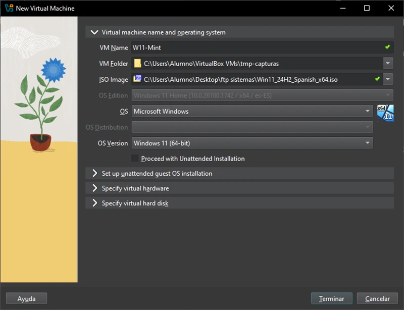
Figura 1. Nueva máquina virtual W11-Mint.
Asigna memoria, CPU, disco y firmware
Asigna 4096 MB de RAM, 2 CPU y un disco VDI dinámico de 100 GB. En Sistema, comprueba que están activos EFI, TPM 2.0 y Arranque seguro.
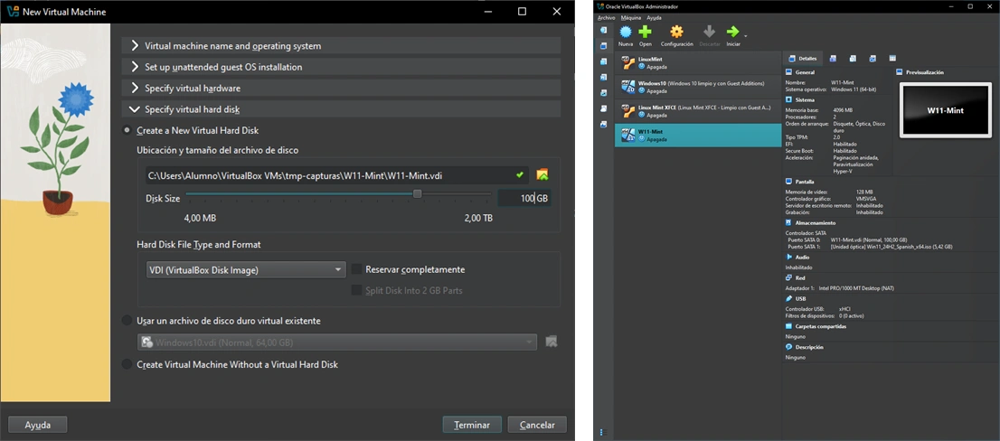
Figura 2. Hardware, disco y firmware de la máquina.
Instalar el sistema
Elige idioma y edición
Elige idioma y teclado español, pulsa No tengo clave de producto y selecciona Windows 11 Pro.
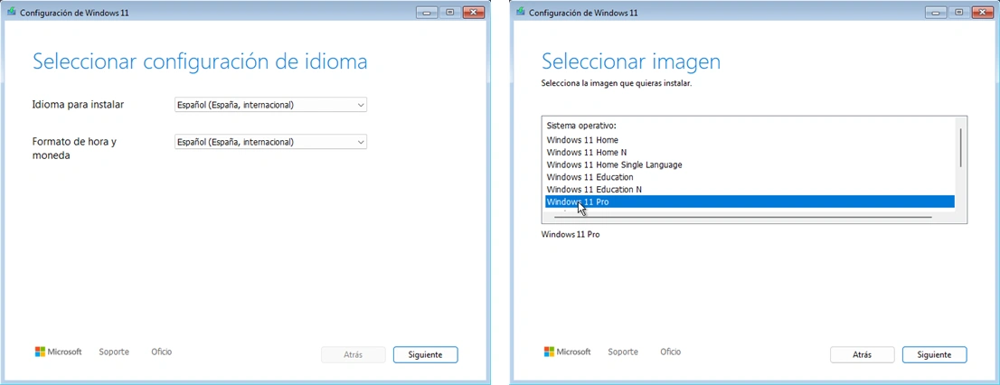
Figura 3. Idioma, clave de producto y edición.
Crea una partición de 40 GB
Acepta la licencia y, sobre el espacio sin asignar, pulsa Create Partition con 40960 MB. Windows crea automáticamente las particiones EFI, MSR y la principal, y quedan 59,9 GB libres para Linux.
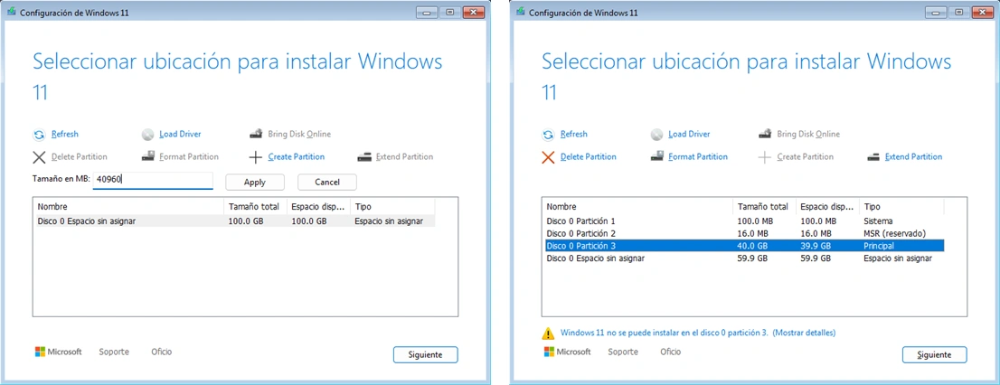
Figura 4. Partición de 40 GB para Windows y espacio libre para Linux.
Error real: «no se puede instalar en el disco 0 partición 3»
Es una advertencia del instalador nuevo de la 24H2. Se puede ignorar: al pulsar Siguiente, la instalación continuó.
Instala sin volver a arrancar la ISO
Pulsa Instalar y, cuando reinicie, no pulses ninguna tecla para no volver a arrancar la ISO.
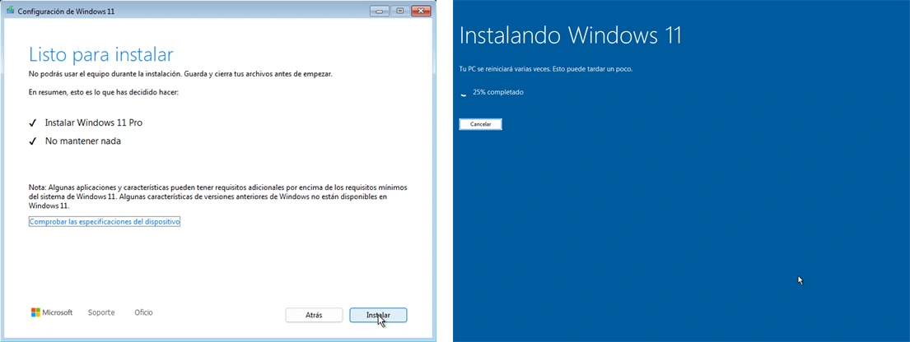
Figura 5. Instalación en curso.
Primer arranque y cuenta local
Desconecta la red
Elige región y teclado y, en «Vamos a conectarte a una red», desconecta el adaptador de red de VirtualBox.
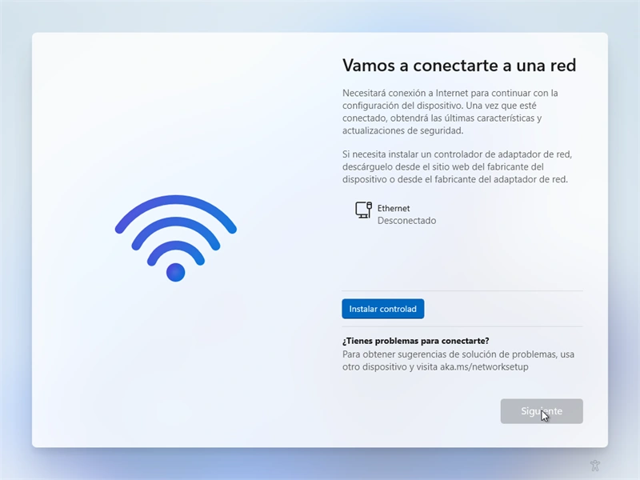
Figura 6. Red desconectada en el asistente inicial.
Salta el requisito de Internet
Pulsa Shift + F10 y ejecuta estos comandos. La máquina se reinicia y vuelve al principio del asistente.
cd oobe
bypassnro
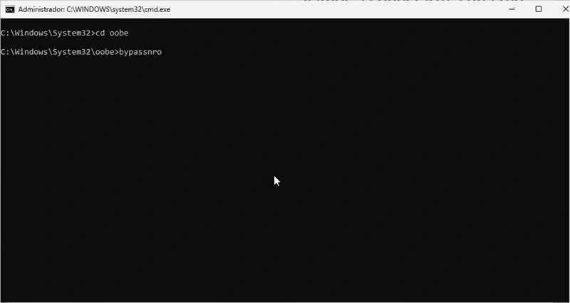
Figura 7. Comando bypassnro desde Shift + F10.
Error real: Windows pide Internet y cuenta de Microsoft
El asistente de configuración inicial de Windows 11 lo exige por defecto. Con la red desconectada y bypassnro aparece la opción de cuenta local.
Crea la cuenta local
Pulsa No tengo Internet, crea la cuenta local usuario con su contraseña y tres preguntas de seguridad, y desactiva las opciones de privacidad.
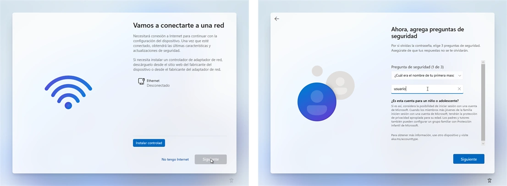
Figura 8. Cuenta local y privacidad.
Post-instalación
Instala las Guest Additions
Vuelve a conectar la red, inserta el CD de las Guest Additions, ejecuta VBoxWindowsAdditions.exe y reinicia.
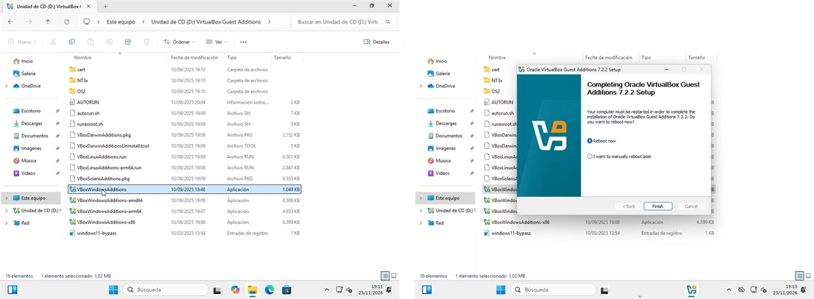
Figura 9. Guest Additions en Windows.
Capítulo 2 · Windows
Preparar Windows para el arranque dual
Antes de instalar Linux hay que dejar la partición de Windows desbloqueada y sin cifrar, comprobar el espacio libre y guardar una instantánea.
Inicio rápido y BitLocker
Desactiva la hibernación y el Inicio rápido
En un Terminal de administrador. El Inicio rápido deja la partición NTFS bloqueada.
powercfg -h off
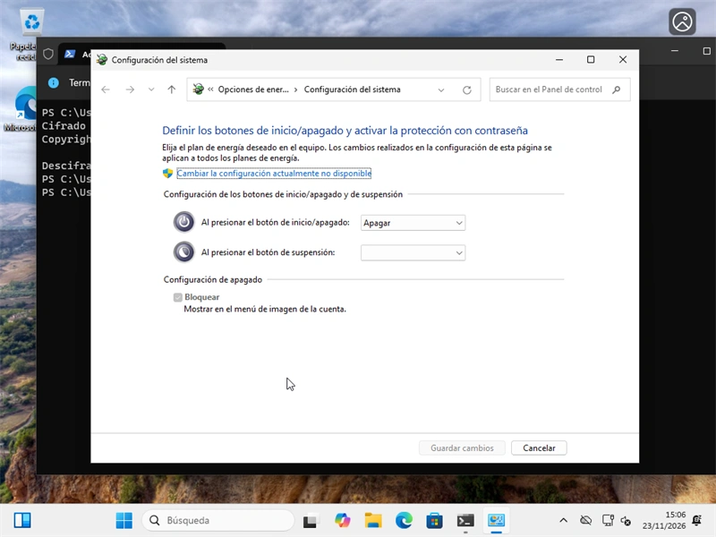
Figura 10. Hibernación e Inicio rápido desactivados.
Comprueba el cifrado y desactívalo
Windows había empezado a cifrar C: por su cuenta, así que se desactivó.
manage-bde -status
manage-bde -off C:
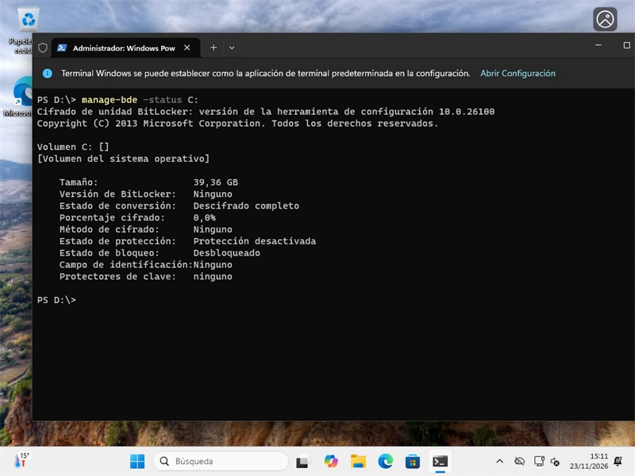
Figura 11. BitLocker desactivado en C:.
Error real: Windows estaba cifrando C: con BitLocker
Es el cifrado de dispositivo automático de Windows 11 24H2. Hay que quitarlo con manage-bde -off C: antes de tocar las particiones.
Espacio libre e instantánea
Comprueba el espacio libre
En el Administrador de discos se ven los 59,89 GB No asignados al final del disco. Como se dejaron libres al instalar, no hizo falta Reducir volumen.
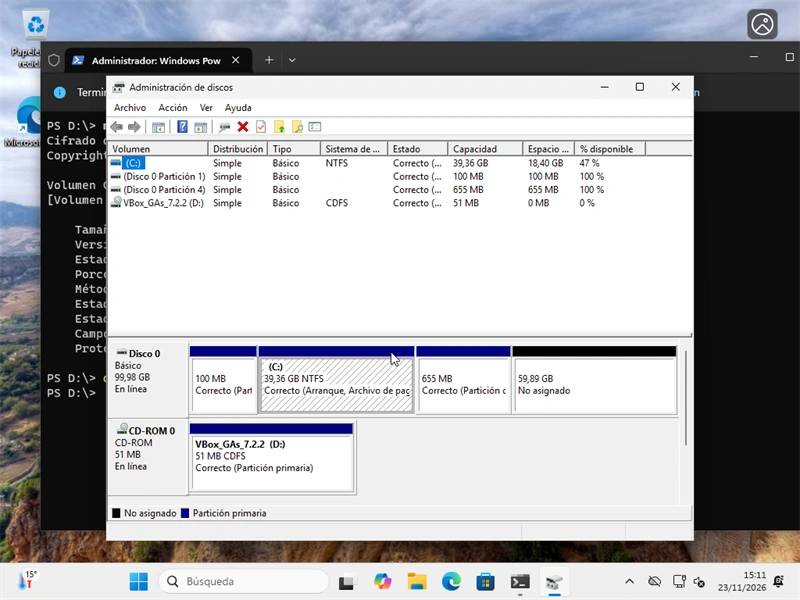
Figura 12. Espacio libre para Linux.
Toma una instantánea
Apaga Windows y toma la instantánea W11-antes-de-Mint antes de tocar el particionado.
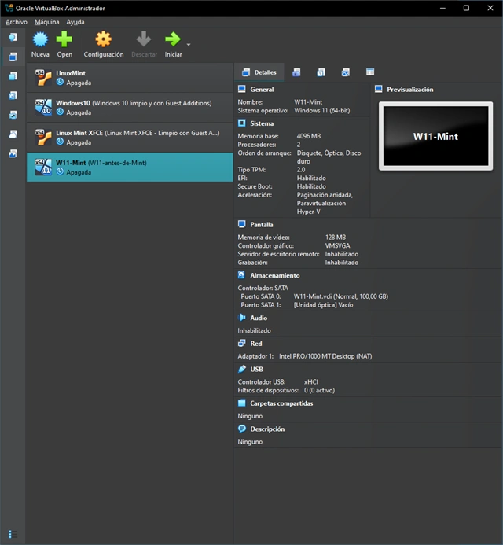
Figura 13. Instantánea antes de instalar Mint.
Comprueba que está listo
Hibernación desactivada, C: sin cifrar, 59,9 GB sin asignar y la instantánea W11-antes-de-Mint creada.
Capítulo 3 · Linux Mint
Instalar Linux Mint XFCE
Linux Mint se instala en el espacio libre, reutiliza la partición EFI de Windows sin formatearla y añade GRUB.
Arranque en modo Live
Arranca la ISO de Linux Mint
Carga la ISO de Linux Mint 22.3 XFCE y elige Start Linux Mint. Arranca con Secure Boot activo porque el cargador está firmado.
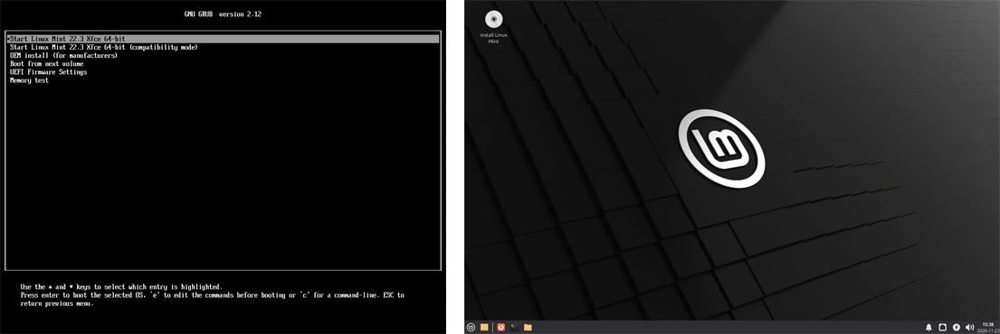
Figura 14. Arranque de Linux Mint en modo Live.
Revisa el disco
Debe verse la tabla GPT con las cuatro particiones de Windows y el espacio libre al final.
sudo fdisk -l /dev/sda
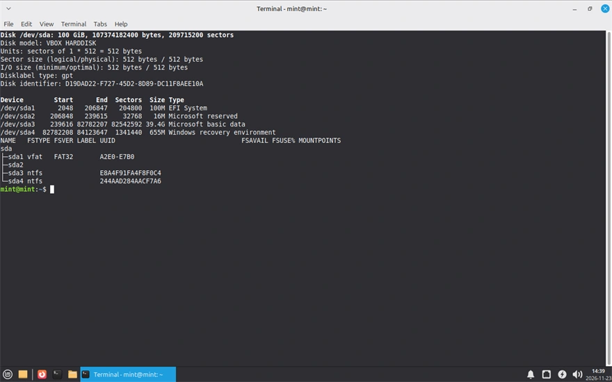
Figura 15. Particiones vistas desde Linux.
Asistente de instalación
Elige idioma y teclado
Abre Install Linux Mint y elige Español y teclado Spanish, sin pulsar Intro en la lista.
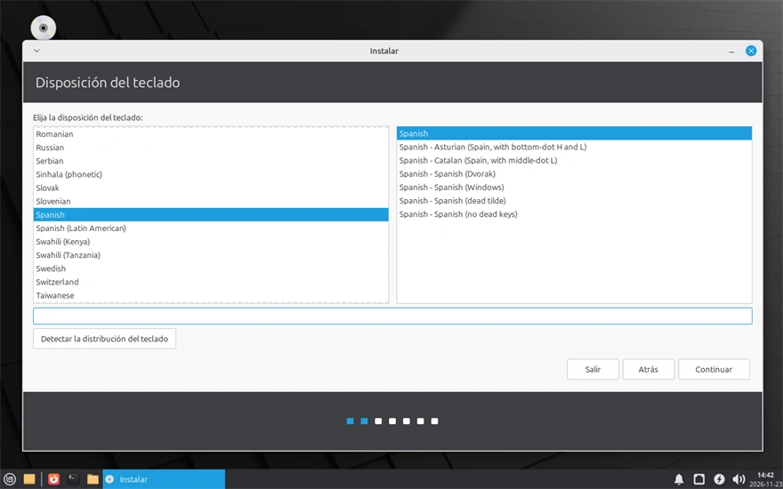
Figura 16. Idioma y teclado.
Error real: el teclado volvía a English (US)
Se pulsó Intro en la lista y el instalador avanzó sin guardar la elección. Solución: volver Atrás, elegir Spanish y pulsar el botón Continuar.
Elige «Más opciones»
Deja sin marcar los códecs y, en Tipo de instalación, donde ya detecta Windows Boot Manager, elige Más opciones.
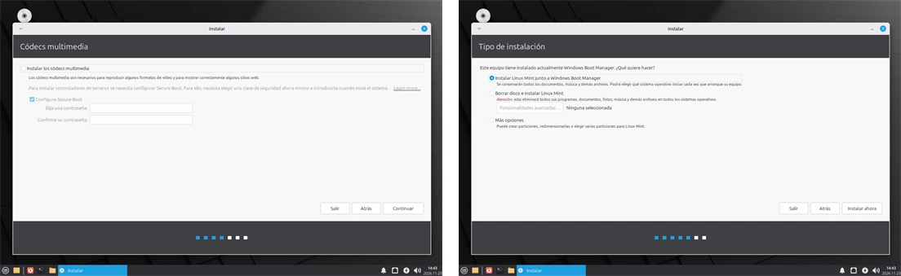
Figura 17. Tipo de instalación: Más opciones.
Particionado manual
Crea la partición raíz
Deja sda1 (efi) sin formatear y, en el espacio libre, crea con + una partición ext4 con punto de montaje /. No hace falta swap: Mint crea un swapfile.
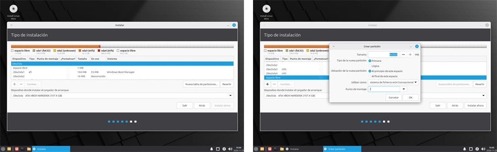
Figura 18. Partición raíz ext4.
No formatees la partición EFI
Contiene el cargador de Windows. Si se formatea, Windows deja de arrancar.
Elige dónde va el cargador
Instala el cargador de arranque en /dev/sda y pulsa Instalar ahora. En la confirmación solo se formatea la partición 5.
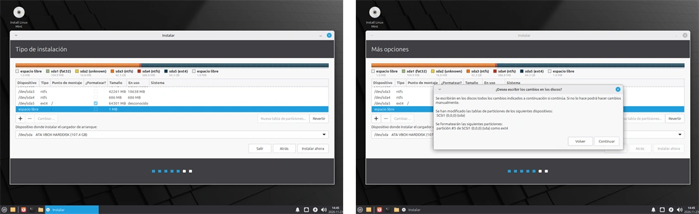
Figura 19. Cargador de arranque y confirmación.
Usuario y finalización
Crea el usuario
Elige la zona horaria Madrid y crea el usuario usuario en el equipo mint-dual.
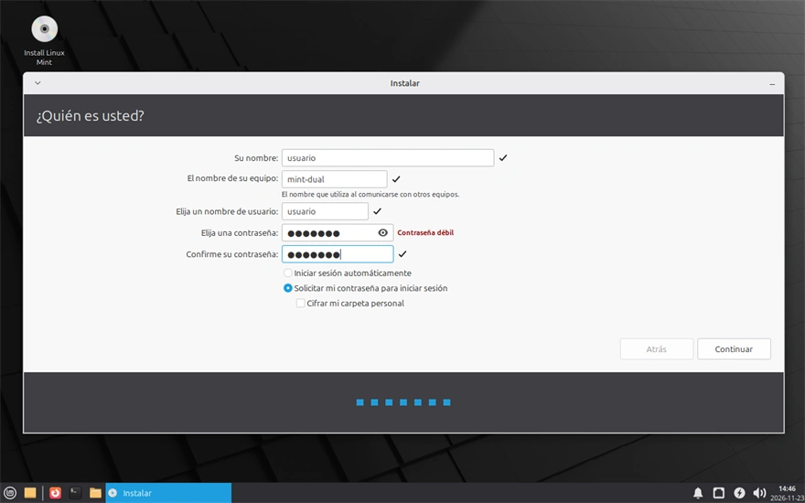
Figura 20. Zona horaria y usuario.
Reinicia
Al terminar la copia, pulsa Reiniciar ahora, expulsa la ISO y pulsa Enter.
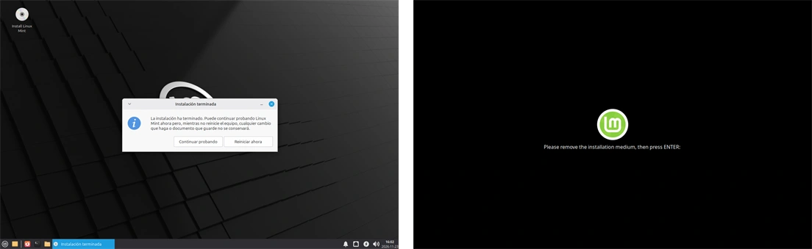
Figura 21. Fin de la instalación.
Capítulo 4 · Linux Mint
Arranque dual y post-instalación
Se comprueba que GRUB arranca los dos sistemas, se instalan las Guest Additions en Linux con Secure Boot y se verifica cómo ha quedado el disco.
Menú GRUB
Comprueba el menú de GRUB
Al arrancar aparece GRUB con Linux Mint y Windows Boot Manager: el arranque dual funciona.
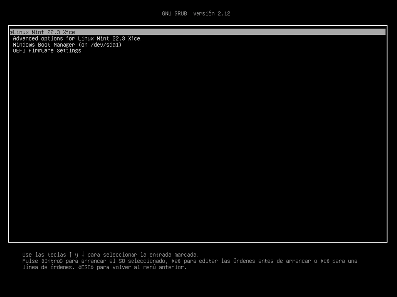
Figura 22. Menú GRUB con los dos sistemas.
Arranca Linux Mint
Inicia sesión con el usuario creado.
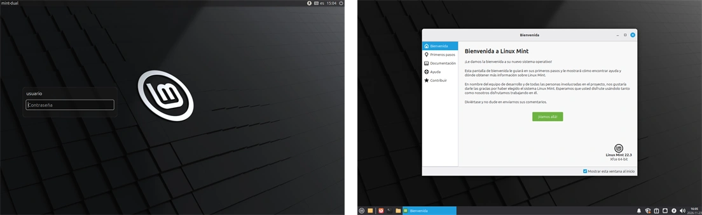
Figura 23. Linux Mint arrancado.
Arranca Windows
Reinicia, elige Windows Boot Manager y comprueba que Windows 11 arranca igual que antes.
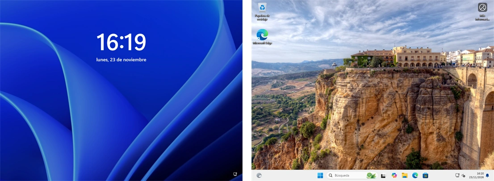
Figura 24. Windows 11 arrancado desde GRUB.
Guest Additions en Linux Mint y clave MOK
Instala las dependencias y las Guest Additions
Instala build-essential, dkms y linux-headers, inserta el CD de las Guest Additions y ejecuta el instalador.
sudo apt install build-essential dkms linux-headers-$(uname -r)
sudo sh VBoxLinuxAdditions.run
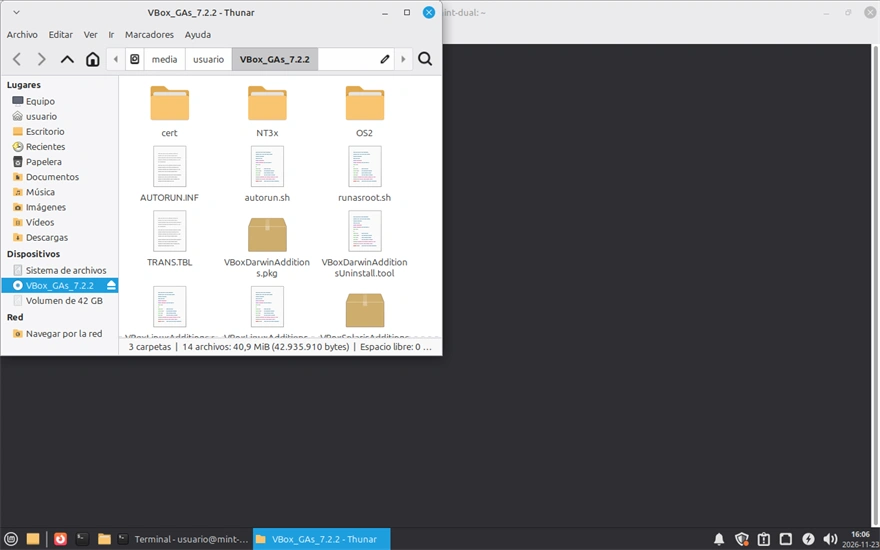
Figura 25. Guest Additions en Linux Mint.
Pon una contraseña para la clave MOK
Con Secure Boot activo, el instalador firma los módulos con una clave MOK y pide una contraseña temporal.
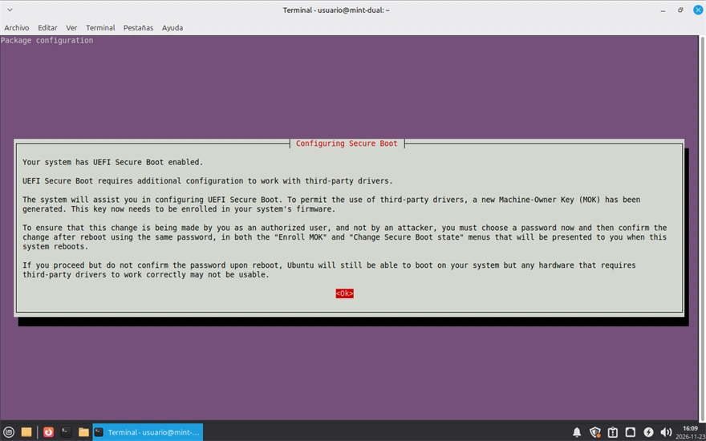
Figura 26. Firma de los módulos con clave MOK.
Registra la clave en MokManager
Reinicia y, en MokManager, elige Enroll MOK → Continue → Yes, escribe la contraseña y pulsa Reboot.
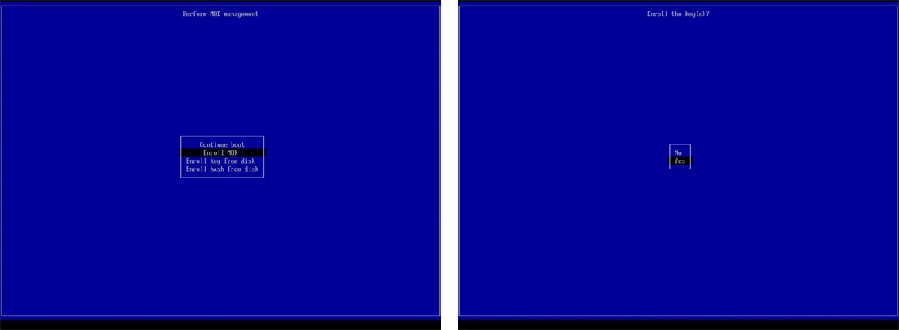
Figura 27. Registro de la clave en MokManager.
Error real: Guest Additions compiladas pero sin cargar
Con Secure Boot activo solo se cargan módulos firmados. Hasta que no se registra la clave MOK al reiniciar, los módulos no cargan.
Comprueba que los módulos cargan
Secure Boot debe seguir activo y vboxguest debe aparecer cargado.
mokutil --sb-state
lsmod | grep vbox
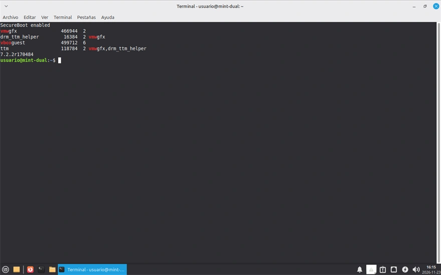
Figura 28. Secure Boot activo y módulo vboxguest cargado.
Verificación
Revisa las particiones
Se ve la partición EFI compartida en /boot/efi, las particiones de Windows y sda5 (ext4) en /.
lsblk -f
sudo fdisk -l
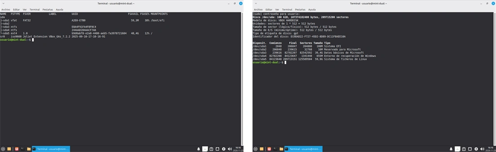
Figura 29. Particiones del arranque dual.
Revisa la entrada de arranque y la partición EFI
El firmware arranca el shim de GRUB (shimx64.efi), y la partición EFI contiene las carpetas Boot, Microsoft y ubuntu.
efibootmgr -v
sudo ls /boot/efi/EFI
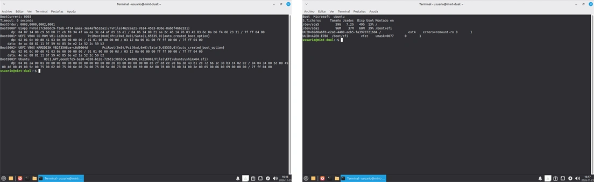
Figura 30. Entrada de arranque y contenido de la partición EFI.
efibootmgr no muestra una entrada de Windows
Es normal: VirtualBox solo guarda en la NVRAM la entrada de GRUB, y GRUB arranca Windows desde bootmgfw.efi.
Comprueba que GRUB conoce Windows
os-prober detecta el Windows Boot Manager y el fichero grub.cfg tiene las dos entradas.
sudo os-prober
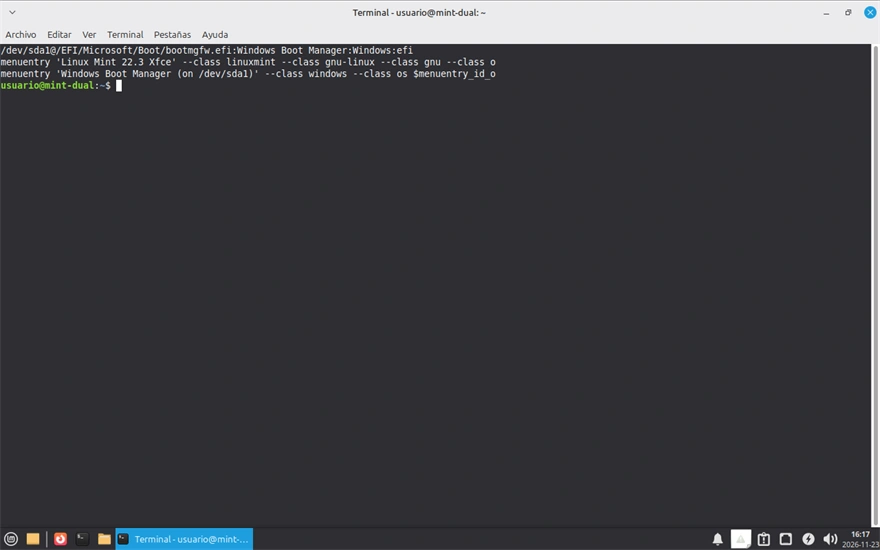
Figura 31. os-prober y grub.cfg.
Míralo desde Windows y guarda la instantánea final
En el Administrador de discos de Windows, la partición de Linux aparece sin letra, porque Windows no lee ext4. Por último, toma la instantánea Dual-boot-OK.
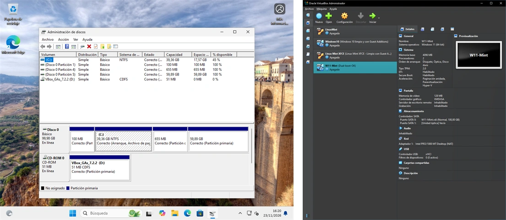
Figura 32. Vista desde Windows e instantánea final.
Capítulo 5
Comprobaciones finales y resumen
Los dos sistemas arrancan desde GRUB, tienen las Guest Additions y salen a Internet.
Guest Additions 7.2.2 (firmadas con clave MOK), build-essential, dkms
Capítulo 6
Problemas, conclusiones y fuentes
Lo que falló durante la práctica, cómo se resolvió y qué se aprende.
Problemas encontrados y soluciones
Problema
Causa
Solución
Windows pide Internet y cuenta de Microsoft
El asistente de configuración inicial de Windows 11 lo exige por defecto
Desconectar la red, pulsar Shift + F10 y ejecutar cd oobe y después bypassnro
Aviso «no se puede instalar en el disco 0 partición 3»
Advertencia del instalador nuevo de la 24H2
Pulsar Siguiente igualmente: la instalación continuó
Windows estaba cifrando C: con BitLocker
Cifrado de dispositivo automático de Windows 11 24H2
manage-bde -off C: antes de tocar las particiones
El teclado de Mint volvía a English (US)
Se pulsó Intro en la lista y el instalador avanzó sin guardar
Volver Atrás, elegir Spanish y pulsar el botón Continuar
Guest Additions de Linux compiladas pero sin cargar
Con Secure Boot activo solo se cargan módulos firmados
Registrar la clave MOK en MokManager al reiniciar
efibootmgr no muestra una entrada de Windows
VirtualBox solo guarda en la NVRAM la entrada de GRUB
Normal: GRUB arranca Windows desde bootmgfw.efi
Conclusiones
La práctica muestra cómo conviven dos sistemas operativos en un mismo disco: Windows 11 Pro, que exige TPM 2.0 y Secure Boot y que hay que preparar antes (Inicio rápido, BitLocker y espacio libre), y Linux Mint, que se adapta al disco existente, reutiliza la partición EFI de Windows e instala GRUB para elegir el sistema al arrancar.
Lecciones
Instala primero Windows. Linux detecta a Windows y lo añade a GRUB; al revés, Windows pisa el arranque.
Deja el espacio para Linux desde el instalador de Windows. Así no hace falta reducir el volumen después.
No formatees nunca la partición EFI. La comparten los dos sistemas.
Toma una instantánea antes de particionar. Si algo sale mal, se vuelve atrás en un minuto.
Con Secure Boot hay un paso más. Registrar la clave MOK para que los módulos de las Guest Additions carguen en Linux.
Fuentes
Material de clase: Unidad 2 – Sistemas Operativos (DAW/DAM), IES Belén.
Consejos: Virtualización de Windows 11 (24H2) en VirtualBox, Arranque Dual (Windows 11 + Linux Mint XFCE) y Estructura de Particiones y Tabla GPT en Sistemas Modernos, IES Belén.